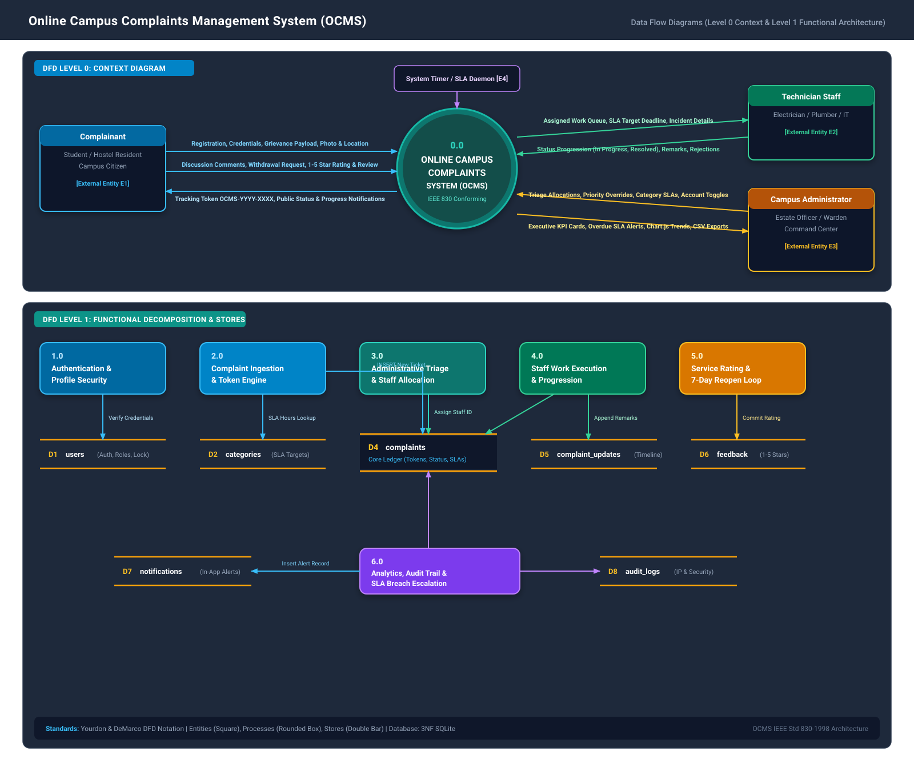

10+ Diagrams
DFD L0/L1/L2, Use Case, Class, Seq, State
4 Actors
Complainant, Staff, Admin, SLA Scheduler
8 Data Stores
users, categories, complaints, feedback, etc.
IEEE 830-1998
Academic Project Report Standard
Master Vector Graphic: DFD Level 0 & Level 1 Architecture
Vector SVG • Standalone

Master Vector Graphic: UML Use Case & Class Domain Model
Vector SVG • Standalone

DFD Level 0: Context Analysis Diagram
System Boundary
graph TD
User["Complainant
(Student / Resident)"] Staff["Technician Staff
(Field Officer)"] Admin["Campus Administrator
(Facility Manager)"] Clock["System Timer / Scheduler
(SLA Monitor)"] OCMS(("0.0
Online Campus Complaints
Management System
(OCMS)")) User -->|Registration, Grievance Details, Attachments, Ratings| OCMS OCMS -->|Tracking Token OCMS-YYYY-XXXX, Public Status, Alerts| User Staff -->|Status Progression (In Progress, Resolved), Remarks| OCMS OCMS -->|Assigned Task Queue, SLA Deadlines, Location Info| Staff Admin -->|Triage Allocation, Priority Override, Category SLAs| OCMS OCMS -->|Executive KPI Cards, Overdue SLA Alerts, CSV Reports| Admin Clock -->|Hourly SLA Heartbeat Pulse| OCMS OCMS -->|Overdue Escalation Flagging| Clock classDef entity fill:#1e293b,stroke:#38bdf8,stroke-width:2px,color:#f8fafc; classDef system fill:#0f766e,stroke:#14b8a6,stroke-width:3px,color:#ffffff; class User,Staff,Admin,Clock entity; class OCMS system;
(Student / Resident)"] Staff["Technician Staff
(Field Officer)"] Admin["Campus Administrator
(Facility Manager)"] Clock["System Timer / Scheduler
(SLA Monitor)"] OCMS(("0.0
Online Campus Complaints
Management System
(OCMS)")) User -->|Registration, Grievance Details, Attachments, Ratings| OCMS OCMS -->|Tracking Token OCMS-YYYY-XXXX, Public Status, Alerts| User Staff -->|Status Progression (In Progress, Resolved), Remarks| OCMS OCMS -->|Assigned Task Queue, SLA Deadlines, Location Info| Staff Admin -->|Triage Allocation, Priority Override, Category SLAs| OCMS OCMS -->|Executive KPI Cards, Overdue SLA Alerts, CSV Reports| Admin Clock -->|Hourly SLA Heartbeat Pulse| OCMS OCMS -->|Overdue Escalation Flagging| Clock classDef entity fill:#1e293b,stroke:#38bdf8,stroke-width:2px,color:#f8fafc; classDef system fill:#0f766e,stroke:#14b8a6,stroke-width:3px,color:#ffffff; class User,Staff,Admin,Clock entity; class OCMS system;
Understanding DFD Level 0 Context
The Context Diagram encapsulates the entire OCMS environment as a single centralized bubble (`0.0`). It clearly shows the boundaries between the 4 external entities and the system. Note that no internal database tables are visible at Level 0, preserving black-box abstraction.
DFD Level 1: Functional Subsystem Decomposition
6 Core Processes • 8 Data Stores
graph TD
E_User["Complainant (Student)"]
E_Staff["Technician (Staff)"]
E_Admin["Administrator"]
E_Clock["Timer / SLA Daemon"]
P1["1.0 Authentication & Profile Security"]
P2["2.0 Complaint Ingestion & Token Engine"]
P3["3.0 Administrative Triage & Staff Allocation"]
P4["4.0 Staff Work Execution & Progression"]
P5["5.0 Service Rating & 7-Day Reopen Loop"]
P6["6.0 Analytics, Audit Trail & SLA Monitoring"]
D1[("D1: users")]
D2[("D2: categories")]
D4[("D4: complaints")]
D5[("D5: complaint_updates")]
D6[("D6: feedback")]
D7[("D7: notifications")]
D8[("D8: audit_logs")]
E_User -->|Credentials| P1
P1 <-->|Verify Hash / Lockout| D1
P1 -->|Log Auth Action| D8
E_User -->|Grievance Data & Photos| P2
P2 <-->|Read Category SLA| D2
P2 -->|INSERT OCMS-YYYY-XXXX| D4
P2 -->|Init Timeline| D5
E_Admin -->|Assign Staff ID| P3
P3 <-->|Query Technicians| D1
P3 -->|Update status='Assigned'| D4
P3 -->|Log Assignment| D5
P3 -->|Dispatch Alert| D7
P3 -->|Security Log| D8
E_Staff -->|Progress: In Progress / Resolved| P4
P4 <-->|Fetch Assigned Queue| D4
P4 -->|Update status & resolved_at| D4
P4 -->|Append Remarks| D5
P4 -->|Alert Student| D7
E_User -->|1-5 Stars & Review| P5
E_User -->|Reopen Justification (<=7 Days)| P5
P5 -->|Insert Rating| D6
P5 -->|Update status='Closed' or 'Reopened'| D4
P5 -->|Append Reopen History| D5
E_Clock -->|Time Pulse| P6
E_Admin -->|Request CSV & Metrics| P6
P6 <-->|Query Overdue Incidents| D4
P6 <-->|Fetch Audit Trail| D8
P6 -->|Write Overdue Alert| D7
classDef entity fill:#1e293b,stroke:#3b82f6,stroke-width:2px,color:#f8fafc;
classDef process fill:#0284c7,stroke:#38bdf8,stroke-width:2px,color:#ffffff;
classDef store fill:#334155,stroke:#f59e0b,stroke-width:2px,color:#fef3c7;
class E_User,E_Staff,E_Admin,E_Clock entity;
class P1,P2,P3,P4,P5,P6 process;
class D1,D2,D4,D5,D6,D7,D8 store;
DFD Level 2.1: Complaint Submission & SLA Token Minting
Decomposition of Process 2.0
graph TD
Complainant["Complainant (Student)"]
P2_1["2.1 Validate Payload (CSRF & Fields)"]
P2_2["2.2 File Upload & UUID Storage"]
P2_3["2.3 Compute Dynamic SLA Due Date"]
P2_4["2.4 Sequential Token Minting"]
P2_5["2.5 Commit Complaint & Timeline"]
D_Cat[("D2: categories")]
D_Comp[("D4: complaints")]
D_Upd[("D5: complaint_updates")]
FS[("File System: /static/uploads/")]
Complainant -->|Form: Title, Room, Category, Urgency, Photo| P2_1
P2_1 -->|Sanitized Form Fields| P2_2
P2_2 -->|Save Stream (.jpg/.png/.pdf <= 5MB)| FS
FS -->|Saved Unique Filename| P2_2
P2_2 -->|Validated Attachment Path| P2_3
P2_3 <-->|Read category.sla_hours| D_Cat
P2_3 -->|Compute due_at = now + base * multiplier| P2_4
P2_4 <-->|Query latest OCMS-YYYY-XXXX| D_Comp
P2_4 -->|Next Tracking Number| P2_5
P2_5 -->|INSERT INTO complaints| D_Comp
P2_5 -->|INSERT INTO complaint_updates| D_Upd
P2_5 -->|Display Success Screen with Token| Complainant
classDef entity fill:#1e293b,stroke:#3b82f6,stroke-width:2px,color:#f8fafc;
classDef process fill:#0284c7,stroke:#38bdf8,stroke-width:2px,color:#ffffff;
classDef store fill:#334155,stroke:#f59e0b,stroke-width:2px,color:#fef3c7;
class Complainant entity;
class P2_1,P2_2,P2_3,P2_4,P2_5 process;
class D_Cat,D_Comp,D_Upd,FS store;
UML 2.5 Use Case Diagram
<<include>> and <<extend>> Relationships
graph LR
User["Complainant (Student)"]
Staff["Technician (Staff)"]
Admin["Campus Administrator"]
Clock["SLA Scheduler"]
subgraph OCMS ["Online Campus Complaints Management System"]
UC_Reg((Register & Login))
UC_Submit((Submit Complaint & Upload Media))
UC_SLA((Compute SLA Deadline))
UC_Token((Mint Reference Token))
UC_Track((Track Live Status))
UC_Withdraw((Withdraw Complaint))
UC_Rate((Submit 1-5 Star Rating))
UC_Reopen((Reopen Ticket <= 7 Days))
UC_Queue((View Assigned Queue))
UC_Progress((Progress: In Progress))
UC_Resolve((Mark Resolved & Remarks))
UC_Reject((Reject with Reason))
UC_Triage((Triage & Assign Staff))
UC_Cat((Manage Categories & SLAs))
UC_Users((Manage Accounts & Lockout))
UC_Reports((Executive Reports & CSV))
UC_Audit((Inspect Audit Trail))
UC_Overdue((Monitor SLA Breaches))
end
User --> UC_Reg
User --> UC_Submit
User --> UC_Track
User --> UC_Withdraw
User --> UC_Rate
User --> UC_Reopen
Staff --> UC_Reg
Staff --> UC_Queue
Staff --> UC_Progress
Staff --> UC_Resolve
Staff --> UC_Reject
Admin --> UC_Reg
Admin --> UC_Triage
Admin --> UC_Cat
Admin --> UC_Users
Admin --> UC_Reports
Admin --> UC_Audit
Clock --> UC_Overdue
UC_Submit -.->|<<include>>| UC_SLA
UC_Submit -.->|<<include>>| UC_Token
UC_Resolve -.->|<<extend>>| UC_Rate
UC_Resolve -.->|<<extend>>| UC_Reopen
UML Class Diagram (Domain Model & Multiplicities)
SQLAlchemy ORM Entities
classDiagram
class User {
+int id
+string name
+string email
+string phone
+string password_hash
+string role
+bool is_active
+int failed_attempts
+datetime locked_until
+set_password(pwd) void
+check_password(pwd) bool
+is_locked() bool
+get_reset_token() string
}
class Category {
+int id
+string name
+string description
+int sla_hours
+string default_priority
+bool is_active
+complaint_count() int
}
class Complaint {
+int id
+string tracking_number
+int user_id
+int category_id
+int assigned_to
+string title
+string description
+string location
+string priority
+string status
+string attachment_path
+datetime due_at
+datetime resolved_at
+is_overdue() bool
+can_withdraw() bool
+can_reopen() bool
}
class ComplaintUpdate {
+int id
+int complaint_id
+int updated_by
+string old_status
+string new_status
+string remark
+is_status_change() bool
}
class Feedback {
+int id
+int complaint_id
+int user_id
+int rating
+string comment
+datetime created_at
}
class Notification {
+int id
+int user_id
+int complaint_id
+string message
+bool is_read
}
class AuditLog {
+int id
+int user_id
+string action
+string target_id
+string ip_address
}
User "1" -- "0..*" Complaint : files >
User "1" -- "0..*" Complaint : assigned_to >
User "1" -- "0..*" ComplaintUpdate : authors >
User "1" -- "0..*" Feedback : writes >
Category "1" -- "0..*" Complaint : classifies >
Complaint "1" *-- "0..*" ComplaintUpdate : contains_history >
Complaint "1" -- "0..1" Feedback : receives_rating >
Complaint "1" -- "0..*" Notification : generates >
UML Sequence Diagram: End-to-End Complaint Lifecycle
Chronological Interaction
sequenceDiagram
autonumber
actor Student as Complainant
actor Admin as Administrator
actor Staff as Technician
participant System as OCMS Application
participant DB as SQLite DB
Student->>System: POST /complaint/new (Title, Category, Priority='High', Photo.jpg)
System->>System: Save attachment with UUID prefix
System->>System: Calculate SLA deadline (Base 24h * 0.5 = 12h)
System->>System: Mint Tracking Token (OCMS-2026-0042)
System->>DB: INSERT INTO complaints & complaint_updates
System-->>Student: 200 OK: Reference Token OCMS-2026-0042
Admin->>System: POST /admin/complaint/OCMS-2026-0042/assign (Staff ID=3)
System->>DB: UPDATE complaints SET assigned_to=3, status='Assigned'
System->>DB: INSERT INTO complaint_updates ("Assigned to Priya Nair")
System->>DB: INSERT INTO audit_logs & notifications
System-->>Admin: Flash: "Complaint assigned successfully"
Staff->>System: POST /staff/complaint/OCMS-2026-0042/update-status (status='In Progress')
System->>DB: UPDATE complaints SET status='In Progress'
System->>DB: INSERT INTO complaint_updates ("Work started on site")
Staff->>System: POST /staff/complaint/OCMS-2026-0042/update-status (status='Resolved', remark='Fixed MCB breaker')
System->>DB: UPDATE complaints SET status='Resolved', resolved_at=NOW()
System->>DB: INSERT INTO complaint_updates ("Resolved by technician")
System->>DB: INSERT INTO notifications ("Complaint resolved. Please rate.")
Student->>System: POST /complaint/OCMS-2026-0042/feedback (rating=5, comment='Great service!')
System->>DB: INSERT INTO feedback (rating=5)
System->>DB: UPDATE complaints SET status='Closed'
System-->>Student: Flash: "Thank you for rating our service!"
UML State Machine Diagram: Complaint Lifecycle Statechart
Finite State Transitions
stateDiagram-v2
[*] --> Submitted : Complainant Files Grievance (FR-2.1)
Submitted --> Withdrawn : User Cancels before Assignment (FR-2.9)
Submitted --> Rejected : Admin Rejects Invalid / Duplicate (FR-3.2)
Submitted --> Assigned : Admin Allocates Technician (FR-3.3)
Assigned --> In_Progress : Technician Starts Site Repair (FR-4.2)
Assigned --> Rejected : Technician Declines with Mandatory Explanation (FR-4.3)
In_Progress --> Resolved : Technician Marks Fixed & Adds Remarks (FR-4.2)
In_Progress --> Rejected : Issue Out of Scope / Unresolvable
Resolved --> Closed : Complainant Submits 1-5 Star Rating (FR-6.1)
Resolved --> Closed : 7 Days Elapse with No Dispute (Auto-Closure)
Resolved --> Reopened : Complainant Reopens within 7-Day Window (FR-2.10)
Reopened --> Assigned : Admin Re-triages Reopened Grievance
Reopened --> In_Progress : Assigned Staff Re-attends Site
Withdrawn --> [*]
Rejected --> [*]
Closed --> [*]
UML Activity Diagram: Swimlane Workflow
Cross-Role Organizational Flow
graph TD
subgraph Complainant_Lane ["Complainant (Student)"]
A1([Start]) --> A2[Authenticate / Register]
A2 --> A3[Fill Form & Upload Photo]
A3 --> A4[Receive Token OCMS-YYYY-XXXX]
A4 --> A5{Wait or Withdraw?}
A5 -->|Withdraw| A6[Click Cancel]
A5 -->|Wait| A7[Monitor Live Tracker]
A8[Receive Resolution Alert] --> A9{Satisfied?}
A9 -->|Yes| A10[Submit 1-5 Star Rating]
A9 -->|No & <= 7 Days| A11[Click Reopen Ticket]
A10 --> A12([End: Closed])
end
subgraph Admin_Lane ["Campus Administrator"]
B1[Inspect Triage Board]
B2{Duplicate?}
B2 -->|Yes| B3[Merge to Parent & Close]
B2 -->|No| B4[Select Staff by Dept]
B4 --> B5[Commit Assignment]
B6[Monitor SLA Overdue Alerts]
B7[Review Reopened Cases]
end
subgraph Staff_Lane ["Technician (Staff)"]
C1[Receive Work Order Alert]
C2[Inspect Location & Photo]
C3{Can Repair?}
C3 -->|No| C4[Reject with Reason]
C3 -->|Yes| C5[Click Start Work]
C5 --> C6[Perform Physical Repairs]
C6 --> C7[Submit Resolution Notes]
end
A4 --> B1
A6 --> A12
B3 --> A12
B5 --> C1
C4 --> A7
C7 --> A8
A11 --> B7
B7 --> C5
classDef lane fill:#f8fafc,stroke:#94a3b8,stroke-width:1px;
classDef step fill:#ffffff,stroke:#0284c7,stroke-width:2px;
classDef decision fill:#fef3c7,stroke:#f59e0b,stroke-width:2px;
classDef terminate fill:#1e293b,stroke:#0f172a,stroke-width:2px,color:#ffffff;
class A1,A12 terminate;
class A2,A3,A4,A6,A7,A8,A10,A11,B1,B3,B4,B5,B6,B7,C1,C2,C4,C5,C6,C7 step;
class A5,A9,B2,C3 decision;
UML Component & Deployment Architecture
3-Tier Infrastructure
graph TD
subgraph ClientTier ["Presentation Tier (Client Browser)"]
Browser["Modern Browser (HTML5, Bootstrap 5.3.3, Chart.js)"]
end
subgraph ServerNode ["Application Server (Python 3.10+)"]
subgraph FlaskApp ["Flask Web Application Factory"]
CSRF["Flask-WTF CSRF Middleware"]
AuthBP["auth_bp: Login, Register, Lockout"]
UserBP["user_bp: Submit, Withdraw, Reopen, Feedback"]
StaffBP["staff_bp: Queue, Progress, Rejections"]
AdminBP["admin_bp: Triage, Reassign, Users, Reports"]
Utils["Utils: SLA Engine, UUID Uploads, AuditLog"]
end
subgraph DataNode ["Persistence Tier"]
SQLA["SQLAlchemy ORM Layer"]
DB[("SQLite Database
instance/complaints.db")] Uploads[("File System Storage
static/uploads/*.jpg, *.pdf")] end end ClientTier -->|HTTPS / REST Requests| CSRF CSRF --> AuthBP CSRF --> UserBP CSRF --> StaffBP CSRF --> AdminBP AuthBP --> Utils UserBP --> Utils StaffBP --> Utils AdminBP --> Utils Utils --> SQLA Utils --> Uploads SQLA --> DB classDef client fill:#1e293b,stroke:#3b82f6,stroke-width:2px,color:#f8fafc; classDef server fill:#0f172a,stroke:#38bdf8,stroke-width:2px,color:#ffffff; classDef db fill:#334155,stroke:#f59e0b,stroke-width:2px,color:#fef3c7; class Browser client; class CSRF,AuthBP,UserBP,StaffBP,AdminBP,Utils,SQLA server; class DB,Uploads db;
instance/complaints.db")] Uploads[("File System Storage
static/uploads/*.jpg, *.pdf")] end end ClientTier -->|HTTPS / REST Requests| CSRF CSRF --> AuthBP CSRF --> UserBP CSRF --> StaffBP CSRF --> AdminBP AuthBP --> Utils UserBP --> Utils StaffBP --> Utils AdminBP --> Utils Utils --> SQLA Utils --> Uploads SQLA --> DB classDef client fill:#1e293b,stroke:#3b82f6,stroke-width:2px,color:#f8fafc; classDef server fill:#0f172a,stroke:#38bdf8,stroke-width:2px,color:#ffffff; classDef db fill:#334155,stroke:#f59e0b,stroke-width:2px,color:#fef3c7; class Browser client; class CSRF,AuthBP,UserBP,StaffBP,AdminBP,Utils,SQLA server; class DB,Uploads db;